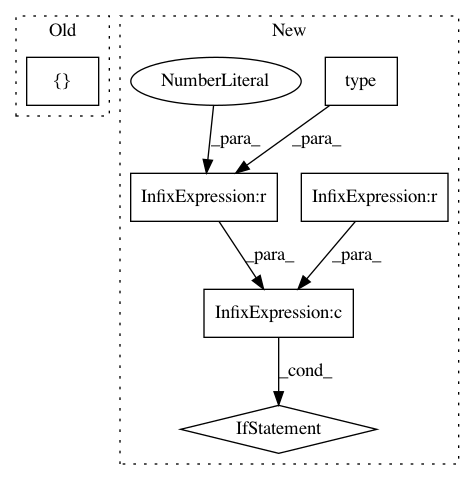

f06c7e4dcd9d3044580dff155cdeb4978e622188,keras/backend/cntk_backend.py,,conv1d,#Any#Any#Any#Any#Any#Any#,1482
Before Change
kernel = C.swapaxes(kernel, 0, 2)
padding = _preprocess_border_mode(padding)
strides = [strides]
x = C.convolution(
kernel,
x,
strides=tuple(strides),
After Change
padding = _preprocess_border_mode(padding)
if dev.type() == 0 and dilation_rate != 1:
raise ValueError("Dilated convolution on CPU is not supported by CNTK backend. "
"Please set `dilation_rate` to 1. You passed: %s" % (dilation_rate,))
x = C.convolution(
kernel,
x,
strides=strides,
In pattern: SUPERPATTERN
Frequency: 3
Non-data size: 6
Instances
Project Name: keras-team/keras
Commit Name: f06c7e4dcd9d3044580dff155cdeb4978e622188
Time: 2018-08-28
Author: ybliang8@gmail.com
File Name: keras/backend/cntk_backend.py
Class Name:
Method Name: conv1d
Project Name: streamlit/streamlit
Commit Name: 87f77f89f44f4efcedcdd1495458907726eab490
Time: 2019-05-29
Author: 44782696+aaj-st@users.noreply.github.com
File Name: lib/streamlit/elements/image_proto.py
Class Name:
Method Name: marshall_images
Project Name: keras-team/keras
Commit Name: d88f2006af35179b986479ac6ad5a20dac8ac9d1
Time: 2018-08-23
Author: ybliang8@gmail.com
File Name: keras/backend/cntk_backend.py
Class Name:
Method Name: conv2d